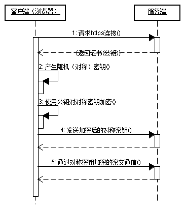
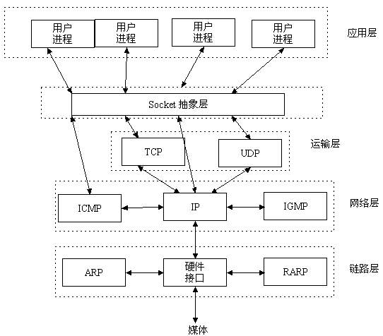

参考：leetcode
| 类型 | TCP | UDP |
|---|---|---|
| 面向连接 | 是 | 否 |
| 传输可靠 | 是 | 否 |
| 传输形式 | 字节流 | 数据报文段 |
| 效率 | 慢 | 快 |
| 所需资源 | 多 | |
| 首部字节 | 20-60 | 8 |
| 应用 | 文件/邮件 | 即时通讯、域名转换 |
Q1. TCP 是如何保证可靠性的
数据分块：应用数据被分割成 TCP 认为最适合发送的数据块。
序列号和确认应答：TCP 给发送的每一个包进行编号，在传输的过程中，每次接收方收到数据后，都会对传输方进行确认应答，即发送 ACK 报文，这个 ACK 报文当中带有对应的确认序列号，告诉发送方成功接收了哪些数据以及下一次的数据从哪里开始发。除此之外，接收方可以根据序列号对数据包进行排序，把有序数据传送给应用层，并丢弃重复的数据。
校验和： TCP 将保持它首部和数据部分的检验和。这是一个端到端的检验和，目的是检测数据在传输过程中的任何变化。如果收到报文段的检验和有差错，TCP 将丢弃这个报文段并且不确认收到此报文段。
流量控制： TCP 连接的双方都有一个固定大小的缓冲空间，发送方发送的数据量不能超过接收端缓冲区的大小。当接收方来不及处理发送方的数据，会提示发送方降低发送的速率，防止产生丢包。TCP 通过滑动窗口协议来支持流量控制机制。
拥塞控制： 当网络某个节点发生拥塞时，减少数据的发送。
ARQ协议： 也是为了实现可靠传输的，它的基本原理就是每发完一个分组就停止发送，等待对方确认。在收到确认后再发下一个分组。
超时重传： 当 TCP 发出一个报文段后，它启动一个定时器，等待目的端确认收到这个报文段。如果超过某个时间还没有收到确认，将重发这个报文段。
Q2. TCP粘包、原因及解决方法
为什么会发生TCP粘包和拆包?
① 发送方写入的数据大于套接字缓冲区的大小，此时将发生拆包。
② 发送方写入的数据小于套接字缓冲区大小，由于 TCP 默认使用 Nagle 算法，只有当收到一个确认后，才将分组发送给对端，当发送方收集了多个较小的分组，就会一起发送给对端，这将会发生粘包。
③ 进行 MSS （最大报文长度）大小的 TCP 分段，当 TCP 报文的数据部分大于 MSS 的时候将发生拆包。
④ 发送方发送的数据太快，接收方处理数据的速度赶不上发送端的速度，将发生粘包。
常见解决方法
① 在消息的头部添加消息长度字段，服务端获取消息头的时候解析消息长度，然后向后读取相应长度的内容。
② 固定消息数据的长度，服务端每次读取既定长度的内容作为一条完整消息，当消息不够长时，空位补上固定字符。但是该方法会浪费网络资源。
③ 设置消息边界，也可以理解为分隔符，服务端从数据流中按消息边界分离出消息内容，一般使用换行符。
什么时候需要处理粘包问题？
当接收端同时收到多个分组，并且这些分组之间毫无关系时，需要处理粘包；而当多个分组属于同一数据的不同部分时，并不需要处理粘包问题。
Q3. DNS过程，查询自己用过吗？ a记录？SRV?（没听过）
过程：
初始状态：客户端【closed】服务端【listen】
step1. 客户端发送【SYN=1，seq=x(一般为随机数)】-> 客户端变为【SYN-SENT】
step2. 服务端收到信息后，返回【SYN=1，ACK=1,seq=y，ack=x+1】-> 服务端变为【SYN-Received】
step3. 客户端收到信息后，返回【ACK=1，seq=x+1，ack=y+1】-> 客户端变为【ESTABLISHED】
step4. 服务端接受信息后-> 服务端变为【ESTABLISHED】
目的：
Q1. 如果三次握手的时候每次握手信息对方没有收到会怎么样？
RST 报文给 客户端，消除客户端单方面建立连接的状态。Q2. 第 2 次握手传回了 ACK，为什么还要传回 SYN?
ping命令本身相当于一个应用程序，位于应用层，
ping使用的是网络层的ICMP协议。
ICMP协议是TCP/IP协议集中的一个子协议，属于网络层协议。
 过程：
过程：
初始状态：客户端【ESTABLISHED】服务端【ESTABLISHED】
step1. 客户端发送【FIN=1，seq=u(一般为随机数)】-> 客户端变为【FIN-WAIT-1】即半关闭阶段 -> 并且停止向服务端发送通信数据。
step2. 服务端收到信息后，返回【ACK=1,seq=v，ack=u+1】-> 服务端变为【CLOSED-WAIT】-> 随后服务器开始准备释放服务器端到客户端方向上的连接。
step3. 客户端收到信息后-> 客户端变为【FIN-WAIT-2】
step4. 服务端发出信息后，会将遗留的待传数据传送给客户端，待传输完成后 -> 服务端发出【FIN=1，ACK=1，seq=w，ack=u+1】-> 服务端变为【LAST-ACK】-> 停止向客户端发送数据。
step5. 客户端收到信息后返回【ACK=1,seq=u+1，ack=w+1】-> 客户端变为【TIME-WAIT】-> 等待 2 MSL -> 客户端变为【CLOSED】
MSL时间 ： windows 120s/linux 60s。所以time-wait时间（2*msl） 挺长的
step6. 服务端收到信息后-> 服务端变为【CLOSED】
Q1. CLOSE-WAIT 和 TIME-WAIT 的状态和意义？
CLOSE-WAIT 状态就是为了保证服务器在关闭连接之前将待发送的数据发送完成。
TIME-WAIT
短连接： 每次请求一个资源就建立一次连接，完成后就关闭
长连接： 只建立一次连接，多次资源都复用该连接
并行连接： 并发的短连接
起源：
长连接的环境下，进行一次数据交互后，很长一段时间内无数据交互时，客户端可能意外断电、死机、崩溃、重启，还是中间路由网络无故断开，这些TCP连接并未来得及正常释放，那么，连接的另一方并不知道对端的情况，它会一直维护这个连接，长时间的积累会导致非常多的半打开连接，造成端系统资源的消耗和浪费，且有可能导致在一个无效的数据链路层面发送业务数据，结果就是发送失败。
当客户端端等待超过一定时间后自动给服务端发送一个空的报文，如果对方回复了这个报文证明连接还存活着，如果对方没有报文返回且进行了多次尝试都是一样，那么就认为连接已经丢失，客户端就没必要继续保持连接了。如果没有这种机制就会有很多空闲的连接占用着系统资源。
A和B两边通过三次握手建立好TCP连接，然后突然间B就宕机了，之后时间内B再也没有起来。如果B宕机后A和B一直没有数据通信的需求，A就永远都发现不了B已经挂了，那么A的内核里还维护着一份关于A&B之间TCP连接的信息，浪费系统资源。于是在TCP层面引入了keepalive的机制，A会定期给B发空的数据包，通俗讲就是心跳包，一旦发现到B的网络不通就关闭连接。这一点在LVS内尤为明显，因为LVS维护着两边大量的连接状态信息，一旦超时就需要释放连接。
作用：
http中实现
在HTTP/1.0里，为了实现client到web-server能支持长连接，必须在HTTP请求头里显示指定
Connection:keep-alive
在HTTP/1.1里，就默认是开启了keep-alive，要关闭keep-alive需要在HTTP请求头里显示指定
Connection:close

1. 应用层
2. 表示层
3. 会话层
4. 传输层
5. 网络层
6. 数据链路层
7. 物理层
而 TCP/IP 参考模型直接面向市场需求，实现起来也比较容易，因此在一经提出便得到了广泛的应用。基于 TCP/IP 的参考模型将协议分成四个层次，如上图所示，它们分别是：网络访问层、网际互联层、传输层、和应用层。
1. 应用层
2. 传输层
3. 网际互联层
4. 网络接入层
应用数据报→传输层报文段→ip成组→链路层成帧→物理层比特流
| OSI 七层网络模型 | TCP/IP 四层概念模型 | 对应的网络协议 |
|---|---|---|
| 应用层（Application） | 应用层 | HTTP, TFTP, FTP, NFS, WAIS, SMTP, Telnet, DNS, SNMP |
| 表示层（Presentation） | ~ | TIFF, GIF, JPEG, PICT |
| 会话层（Session） | ~ | RPC, SQL, NFS, NetBIOS, names, AppleTalk |
| 传输层（Transport） | 传输层 | TCP, UDP |
| 网络层（Network） | 网络层 | IP, ICMP, ARP, RARP, RIP, IPX |
| 数据链路层（Data Link） | 数据链路层 | FDDI, Frame Relay, HDLC, SLIP, PPP |
| 物理层（Physical） | ~ | EIA/TIA-232, EIA/TIA-499, V.35, 802.3 |

Q1 某学校获取到一个B类地址段,要给大家分开子网使用,鉴于现在上网设备急剧增多,管理员给每个网段进行划分的子网掩码设置为255.255.254.0,考虑每个网段需要有网关设备占用一个地址的情况下,每个网段还有多少可用的主机地址？
IP地址=网络号+主机号
根据子网掩码255.255.254.0，可以看出，前两段都已满，第三段二进制是1111 1110，最后一位可用，最后一段8位可用。 所以可用主机地址为：2^9=512。 全1和全0地址留作特殊用途，题目又说网关设备用一个地址，所以512-3=509
Q2 IP地址200.23.16.0/23的网络掩码为
子网掩码位数等于网络位为1的位数，故等于23，即：11111111.11111111.11111110.00000000 等于255.255.254.0
IPV6地址有128位二进制数组成。每四个二进制数组成一个十六进制数，有128/4=32个十六进制数
每四个十六进制数为一组，中间用冒号隔开。如XXXX:XXXX:XXXX:XXXX:XXXX:XXXX:XXXX:XXXX:XXXX
如果XXXX四位是全零，可以省略写成::形式

HTTP = 超文本传输协议[Hyper Text Transfer Protocol]
它是从WEB服务器传输**超文本标记语言(HTML)**到本地浏览器的传送协议。
目的： 设计HTTP最初的目的是为了提供一种发布和接收HTML页面的方法。
原理：
HTTP是一个基于TCP/IP通信协议来传递数据的协议，传输的数据类型为HTML 文件,、图片文件, 查询结果等。
HTTP协议一般用于B/S架构（）。浏览器作为HTTP客户端通过URL向HTTP服务端即WEB服务器发送所有请求。
a. 客户端/服务端模式，请求/响应模式
b. 简单快速：客户向服务器请求服务时，只需传送请求方法和路径。请求方法常用的有GET、HEAD、POST。
c. 灵活：HTTP允许传输任意类型的数据对象。传输的类型由Content-Type加以标记。
d. 无连接：限制每次连接只处理一个请求。服务器处理完请求，并收到客户的应答后，即断开连接，但是却不利于客户端与服务器保持会话连接，为了弥补这种不足，产生了两项记录http状态的技术，一个叫做Cookie,一个叫做Session。
e. 无状态：无状态是指协议对于事务处理没有记忆，后续处理需要前面的信息，则必须重传。
101 切换协议 200 成功 206 断点续传 301 永久重定向/资源（网页等）被永久转移到其它URL 302 暂时重定向/临时跳转 400 语法错误Bad Request - 403 没有足够的权限Unauthorized 404 找不到对应的资源/请求资源不存在，可能是输入了错误的URL 500 服务器内部错误 502 网关错误 网络错误 503 服务不可用一段时间后可能恢复正常。
6.缺点
请求信息明文传输，容易被窃听截取。
数据的完整性未校验，容易被篡改
没有验证对方身份，存在冒充危险
HTTP1.1也可以多建立几个TCP连接，来支持处理更多并发的请求，但是创建TCP连接本身也是有开销的。
2） 头部数据 在HTTP1.1中，HTTP请求和响应都是由状态行、请求/响应头部、消息主体三部分组成。
HTTP1.1不支持header数据的压缩，HTTP2.0使用HPACK算法对header的数据进行压缩，这样数据体积小了，在网络上传输就会更快。
为了解决上述HTTP存在的问题，就用到了HTTPS。
HTTPS 协议（HyperText Transfer Protocol over Secure Socket Layer）：一般理解为HTTP+SSL/TLS，通过SSL证书来验证服务器的身份，并为浏览器和服务器之间的通信进行加密。
位于 TCP/IP 协议与各种应用层协议之间，为数据通讯提供安全支持。
其前身是 SSL. 目前使用最广泛的是TLS 1.1、TLS 1.2

（1）客户使用https的URL访问Web服务器，要求与Web服务器建立SSL连接。
（2）Web服务器收到客户端请求后，会将网站的证书信息（证书中包含公钥）传送一份给客户端。
（3）客户端的浏览器与Web服务器开始协商SSL连接的安全等级，也就是信息加密的等级。
（4）客户端的浏览器根据双方同意的安全等级，建立会话密钥，然后利用网站的公钥将会话密钥加密，并传送给网站。
（5）Web服务器利用自己的私钥解密出会话密钥。
（6）Web服务器利用会话密钥加密与客户端之间的通信。
多次握手。加载时间延长50%
连接缓存不如http，增加数据开销和功耗
SSL证书要钱
SSL涉及安全算法会消耗cpu资源，对服务器资源消耗较大

HTTPS是HTTP协议的安全版本，HTTP协议的数据传输是明文的，是不安全的，HTTPS使用了SSL/TLS协议进行了加密处理。
http和https使用连接方式不同，默认端口也不一样，http是80，https是443。
五层通信流程：

socket:

socket=套接字，是一组接口。
是[应用层]和[TCP/IP协议族]通信的中间软件抽象层
socket屏蔽了各个协议的通信细节，使得程序员无需关注协议本身，直接使用socket提供的接口来进行互联的不同主机间的进程的通信。
# server
import socket
#创建一个socket对象
server = socket.socket() #相当于创建了一部电话
ip_port = ('192.168.111.1',8001) #创建一个电话卡
server.bind(ip_port) #插上电话卡
server.listen(5) #监听着电话，我能监听5个，接到一个电话之后，后面还能有四个人给我打电话，但是后面这四个人都要排队等着，等着我第一个电话挂掉，再来第6个的时候，第六个人的手机会报错
print('11111')
#等着别人给我打电话，打来电话的时候，我就拿到了和对方的这个连线通道conn和对方的电话号码addr
conn,addr = server.accept() #阻塞住,一直等到有人连接我，连接之后得到一个元祖，里面是连线通道conn和对方的地址(ip+端口)
print('22222')
print(conn)
print('>>>>>>>>>',addr)
while True:
from_client_data = conn.recv(1024) #服务端必须通过两者之间的连接通道来收消息
from_client_data = from_client_data.decode('utf-8')
print(from_client_data)
if from_client_data == 'bye':
break
server_input = input('明威说>>>>：')
conn.send(server_input.encode('utf-8'))
if server_input == 'bye':
break
conn.close() #挂电话
server.close() #关手机
# test_server.py
#_*_coding:utf-8_*_
import socket
import time
client = socket.socket()
server_ip_port = ('192.168.111.1',8001)
client.connect(server_ip_port)
while True:
client_input = input('小文说>>>>：')
client.send(client_input.encode('utf-8')) #给服务端发送消息
if client_input == 'bye':
break
from_server_data = client.recv(1024)
print('来自服务端的消息：',from_server_data.decode('utf-8'))
if from_server_data.decode('utf-8') == 'bye':
break
client.close() #客户端挂电话
# test_client.py

TCP和UDP下socket差异对比图：


套接字有两种（或者称为有两个种族）,分别是基于文件型的和基于网络型的。
AF_UNIX
unix一切皆文件，基于文件的套接字调用的就是底层的文件系统来取数据，两个套接字进程运行在同一机器，可以通过访问同一个文件系统间接完成通信
AF_INET (还有AF_INET6被用于ipv6，还有一些其他的地址家族，不过，他们要么是只用于某个平台，要么就是已经被废弃，或者是很少被使用，或者是根本没有实现，所有地址家族中，AF_INET是使用最广泛的一个，python支持很多种地址家族，但是由于我们只关心网络编程，所以大部分时候我们只使用AF_INET)
所谓粘包问题主要还是因为接收方不知道消息之间的界限，不知道一次性提取多少字节的数据所造成的。
每个socket会被分配两个缓冲区，输入缓冲区+输出缓冲区[默认大小一般都是 8K, python可以通过 getsockopt() 函数获取]
write()/send() 并不立即向网络中传输数据
read()/recv() 函数也是如此，也从输入缓冲区中读取数据，而不是直接从网络中读取。
这些I/O缓冲区特性:

TCP会粘包，但UDP永远不会
连接认证>>身份认证>>ok你可以玩了
文件结构
file{
f_type: DTYPE_VNODE || DTYPE_SOCKET // 普通文件｜｜socket对象
f_ops: socket类型的驱动
f_data: // 具体的socket结构体
{
so_type:
SOCK_STREAM // 提供有序的、可靠的、双向的和基于连接的字节流服务，当使用Internet地址族时使用TCP。
|| SOCK_DGRAM // 支持无连接的、不可靠的和使用固定大小（通常很小）缓冲区的数据报服务，当使用Internet地址族使用UDP。
|| SOCK_RAW // 原始套接字，允许对底层协议如IP或ICMP进行直接访问，可以用于自定义协议的开发
,
//每个socket有一个so_pcb，描述了该socket的所有信息
//而每个socket有一个编号，这个编号就是socket描述符
so_pcb: {
inp_laddr, // 当前主机的ip地址
inp_lport, // 当前主机进程的端口号
inp_faddr, // 发送端主机的ip地址
inp_fport // 发送端主体进程的端口号
}
}
}
socket实例接口 int socket(int protofamily, int so_type, int protocol);
protofamily 指协议族
so_type
protocol 指定具体的协议
bind接口 int bind(int sockfd, const struct sockaddr *addr, socklen_t addrlen);
connect接口 int connect(int sockfd, const struct sockaddr *addr, socklen_t addrlen);
三个参数与bind的三个参数含义一致
不过此处struct sockaddr表示对端公开的地址
拿来建立连接的函数，只有像tcp这样面向连接、提供可靠服务的协议才需要建立连接
listen接口int listen(int sockfd, int backlog)
告知内核在sockfd这个描述符上监听是否有连接到来，并设置同时能完成的最大连接数为backlog
当调用listen后，内核就会建立两个队列
一个SYN队列，表示接受到请求，但未完成三次握手的连接；
另一个是ACCEPT队列，表示已经完成了三次握手的队列
sockfd 是调用socket()函数创建的socket描述符
backlog 已经完成三次握手而等待accept的连接数
int accept(int listen_sockfd, struct sockaddr *addr, socklen_t *addrlen)
三个参数与bind的三个参数含义一致
不过此处的后两个参数是传出参数
accept函数就是从ACCEPT队列中拿一个连接，并生成一个新的描述符，新的描述符所指向的结构体so_pcb中的请求端ip地址、请求端端口将被初始化。
返回值是一个新的描述符，我们姑且称之为new_sockfd
listen、connect、accept流程及原理
send() [TCP]send函数只负责将数据提交给协议层。
send先比较待发送数据的长度len和套接字s的发送缓冲区的长度
SOCKET_ERROR；SOCKET_ERROR；SOCKET_ERROR。要注意send函数把buf中的数据成功copy到s的发送缓冲的剩余空间里后它就返回了，但是此时这些数据并不一定马上被传到连接的另一端。SOCKET_ERROR。（每一个除send外的Socket函数在执行的最开始总要先等待套接字的发送缓冲中的数据被协议传送完毕才能继续，如果在等待时出现网络错误，那么该Socket函数就返回SOCKET_ERROR）recv() [TCP]recv就一直等待，直到协议把数据接收完毕。recv函数就把s的接收缓冲中的数据copy到buf中（注意协议接收到的数据可能大于buf的长度，所以在这种情况下要调用几次recv函数才能把s的接收缓冲中的数据copy完。recv函数仅仅是copy数据，真正的接收数据是协议来完成的）SOCKET_ERROR；0 。0，指示对方关闭；